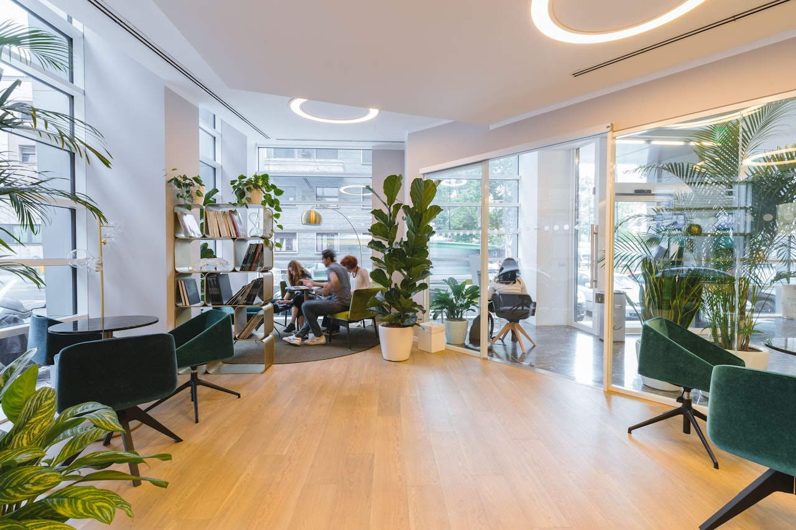

30 秒快速了解：商務中心是一站式辦公解決方案——從公司登記、共享座位到獨立辦公室、會議室都有，拎包就能進駐。本文說明它和共享／虛擬辦公室的差別、費用行情、優缺點，並附上選擇前的避坑清單。

一、商務中心是什麼？
商務中心（Business Center）是提供一站式辦公服務的空間。你不必租下整層商辦、自己裝潢買家具、聘行政人員，就能取得：正式的公司登記地址、可彈性選擇的辦公空間（共享座位或獨立辦公室）、會議室，以及信件代收、電話秘書等加值服務。對新創、個人工作室、分公司設立來說，這是把「初期固定成本」壓到最低的選擇。
二、和共享／虛擬辦公室差在哪？
| 類型 | 主要提供 | 適合對象 |
|---|---|---|
| 虛擬辦公室 | 地址登記、信件代收 | 全遠端、不需座位者 |
| 共享辦公室 | 彈性座位、公共空間 | 自由工作者、一人公司 |
| 商務中心 | 以上全包＋獨立辦公室、會議室 | 需隨團隊成長升級者 |
三者常有重疊，最大差別在於商務中心是「綜合體」——你可以從借址登記起步，團隊長大後直接升級共享座位、獨立辦公室，地址與服務都不必搬家。
三、費用行情總表（台北市）
| 空間類型 | 月費區間 | 通常包含 |
|---|---|---|
| 借址登記 | NT$2,000–3,500 | 登記地址、信件代收 |
| 共享座位 | NT$6,000 起 | 座位、網路、公共空間 |
| 獨立辦公室 | NT$8,000–25,000 | 家具、網路、清潔、門禁 |
| 會議室 | 時租 NT$300–800/時 | 投影／視訊設備 |
※ 區間為市場參考值，實際依地段、樓層、坪數與服務內容而異。詳見台北商務中心租金行情 2026。
四、優點與缺點
優點：
- 初期成本低，免裝潢、免買家具、免請行政
- 拎包即進駐，省下找辦公室與裝修的時間
- 精華地段地址，提升企業形象
- 可隨團隊規模彈性升級或縮減
缺點（誠實說）：
- 長期、大團隊算下來，單位成本可能高於自租整層
- 空間與裝潢客製化程度低於自有辦公室
- 低價衝量型業者品質參差，選錯地址會有查核風險
五、選擇前的避坑清單
- 看實體、能參觀：純賣地址、不讓看空間的要小心
- 問同址登記戶數：願意說明戶數控管的較可信
- 確認信件 SOP：怎麼收、怎麼通知、會不會擅拆，攸關你漏不漏公文
- 別只看價格：明顯低於行情的登記地址，常是被國稅局列管的名單
- 看合約彈性：升級、縮減、退租的條件先問清楚
環球商務中心・南京館
位於台北市中山區南京東路三段101號4樓——捷運南京復興站步行約6分鐘、南京東路金融商圈核心。從虛擬辦公室、共享座位到多間獨立辦公室與會議室，一個地點滿足公司成長各階段，信件代收當日通知。
六、常見問題 FAQ
商務中心是什麼？
提供一站式辦公服務的空間，涵蓋公司登記、獨立辦公室、共享座位、會議室與信件代收等，創業者可拎包進駐並取得正式公司地址。
商務中心、共享、虛擬辦公室差在哪？
虛擬辦公室主打地址登記；共享辦公室提供彈性座位；商務中心是綜合體，可隨團隊成長從登記升級到獨立辦公室。
費用大概多少？
借址登記約 2,000–3,500，共享座位約 6,000 起，獨立辦公室約 8,000–25,000，會議室多採時租，通常已含網路與公共空間。